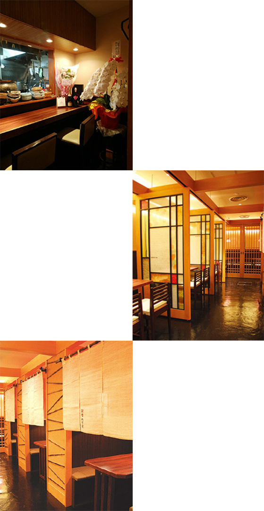

最新情報
-
銀座九丁目再オープン致しました！
再オープンを記念致しまして、オープン月のランチは500円のワンコインにてご提供させて頂きます。どうぞ宜しくお願い致します。
-
緊急事態宣言下の営業について
緊急事態宣言中は夜8時までの営業、アルコール類の提供無しとさせて頂いております。
-
テイクアウト始めました！
ランチ、ディナータイムともにご利用いただけます。是非お家で九丁目の味をお楽しみください。おでんのテイクアウトも可能です。

銀座九丁目の歴史
むかし、銀座にまだ川が流れていた頃…。 昭和二十六年、当店は汐留川のほとりで「おでん茶めし」の屋台から営業を始めました。 かつて歌謡曲で「銀座九丁目水の上」と歌われたようにまさに銀座九丁目は水の上でした。 当時、川岸には船着き場もありボート屋も兼業していたので店主は、銀座の泰明小学校に「自分チ」のボートで通学し先生に大目玉をくらったという逸話を持っています。 昭和三十九年、東京オリンピック開催にあたり、東京の道路網の新設と共に汐留川は埋め立てられ、今や橋の面影も残らないこの地で創業以来 変わらず「おでん銀座九丁目」の味を守っております。 どうぞ、心行くまでご堪能くださいませ。

施設紹介

1～2名様でお越しの際は宜しければ店主が目の前で美味しいおでんを煮込んでいるカウンターへどうぞ。勿論テーブル席もご用意して御座います。暖簾の下がった半個室では4名様までお座り頂けます。 ご宴会のご予約も賜っております。10名程までお座り頂けるお席が御座います。ご予算などはお気軽にご相談下さい。旬の食材を盛り込んでお楽しみいただけるお料理をご用意させて頂きます。
詳しい行き方
-
住所・TEL
- 〒104-0061
- 東京都中央区銀座8-7銀座ナイン2号館地下1F
- TEL:03-3572-XXXX（代）
-
アクセス
- JR新橋駅、銀座口徒歩2分
- 東京メトロ新橋駅3,5番出口徒歩1分
- 東京メトロ銀座駅C3,A2,A3出口徒歩6分
- 新橋駅から226m
-
営業時間
- 月～金：11:30~13:30
17:00~23:00（ラストオーダー22:00） - 定休日：土日祝
- 月～金：11:30~13:30